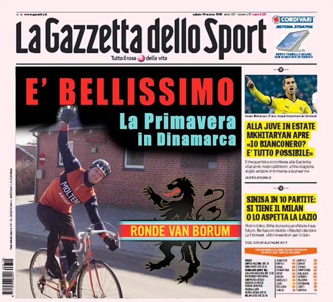
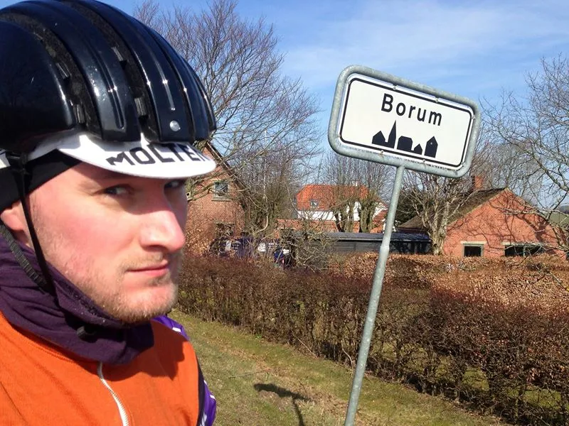

Optakt til Ronde van Borum 2016
I weekenden skyder Squadra Molteni endelig sæsonstarten i gang. Det sker på søndag d. 17. april med den danske ardenner-klassiker Ronde van Borum 2016.
Et omgangsløb på 10 småkuperede omgange af 7,4 km. Holdet har vintertrænet som aldrig før, og er klar til at splitte hele feltet fra hinanden.
Vi har endda øvet os på fejringen af sejren.

Squadra Molteni stiller med 9 af de stærkeste klassikerryttere, og der er lagt op til festfyrværkeri fra starten.
– Vi har gjort vores hjemmearbejde, og vi ved, at lige efter løbet er givet frit, kommer der et byskilt, og det ved vi jo alle hvad betyder, udtaler Niels Bjørnsteen.
Han uddyber yderligere.
– For som man jo siger: “når en gammel cirkushest lugter savsmuld..”. Der vil blive stukket i øst og vest, udtaler en selvsikker holdkaptajn, Niels Bjørnsteen.
Rytterne passerer bl.a. den ældgamle gravhøj ‘Borum Eshøj’, der rager 100 meter op over havets overflade.
– Her har man begravet krigere siden bronzealderen, og Squadra Molteni’s vilde accelerationer vil utvivlsomt betyde Coup de grâce for selv de stærkeste af vores konkurrenter, udtaler holdets løjtnant, Kasper Sørensen.

Det stærkeste hold til dato
Holdets droide og klatrer, Eigil Leegaard, har brugt vinteren i kælderen, hvor han har brygget en speciel Molteni øl, som får præmiere ved Ronde van Borum.
Følgende ryttere stiller til start:
- Peter Meinert
- Per Sandahl
- Niels Bjørnsteen
- Kasper Sørensen
- Eigil Leegaard
- Steffan Sørensen
- Grane Maaløe
- Jens Auer
- Jens Langermand.
Bruttotrupper er forstærket forud for Ronde van Borum 2016
Det er tredje sæson holdet tager fat på, og bruttotruppen og materiellet er yderligere forstærket.
Bruttotruppen er oppe på 12-13 ryttere, og flere af holdets medlemmer har fået opgraderet udstyret forud for sæsonen.
Et par enkelte ryttere har indgået personlige sponsoraftaler med Colnago, der har suppleret et par rytterne med orange Colnago Super rammer.
I nærmeste fremtid byder sæsonplanen på bl.a.
Nordfyn Rundt, Bakkeløbet, Grejsdalsløbet og Viborg Pavé Criterium (hvor holdet mønstrer 10 ryttere til start)